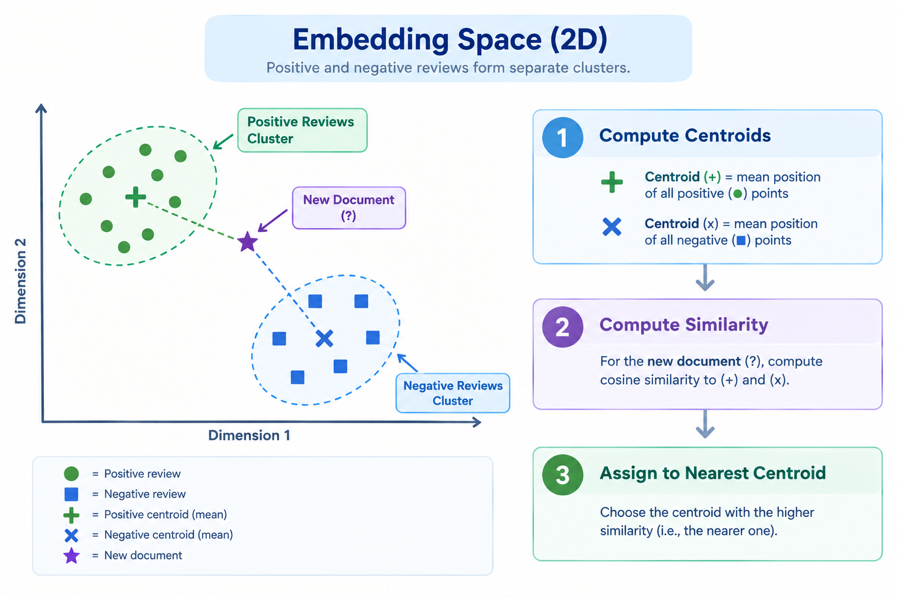

Remark
These lecture notes are in early access and will continue to evolve based on classroom experience and feedback.
5.4. Text Classification by Leveraging Embeddings#
5.4.1. Learning objectives#
By the end of this section, you should be able to:
Apply a pre-trained classifier (RoBERTa fine-tuned for sentiment) to a new dataset without additional training, and articulate the domain-shift assumption this requires.
Generate sentence embeddings using Sentence Transformers and explain formally what property of the embedding space makes it suitable for classification.
Train a Logistic Regression classifier on top of sentence embeddings and explain why this two-stage decomposition is computationally efficient.
Implement prototype-based (centroid) classification using cosine similarity and derive why it is a special case of a linear classifier.
Implement zero-shot embedding classification by encoding natural-language class descriptions and comparing them to document embeddings.
Use a generative model (Flan-T5) for text classification via prompted text generation, and identify the risks of unconstrained decoding for structured prediction.
Compare all six approaches quantitatively on accuracy, data requirements, compute cost, and latency.
5.4.2. Six Approaches to Text Classification#
This section demonstrates that a single classification problem — binary sentiment analysis on movie reviews — can be solved from six fundamentally different angles, each with different assumptions about what resources (labeled data, compute, external API access) are available. All six methods are evaluated on a common dataset and a common test split, which makes their trade-offs directly comparable.
Approach |
Labeled data needed? |
Training required? |
Compute |
|---|---|---|---|
1. Pre-trained classifier |
None |
None |
GPU/CPU |
2. Embeddings + Logistic Regression |
Training set |
Seconds |
GPU/CPU |
3. Prototype / Centroid |
Training set |
None |
GPU/CPU |
4. Zero-shot embedding |
None |
None |
GPU/CPU |
5. Generative (Flan-T5) |
None |
None |
GPU |
6. ChatGPT API |
None |
None |
API |
Understanding this diversity is practically valuable: the appropriate approach depends on how much labeled data is available, what compute resources exist, what accuracy is required, and whether data privacy constraints preclude sending text to a third-party API.
5.4.3. Dataset and Environment Setup#
All six approaches are evaluated on the Rotten Tomatoes movie review dataset, a standard binary sentiment classification benchmark consisting of short critic excerpts labeled as positive (\(y=1\)) or negative (\(y=0\)). The dataset provides a fixed train/validation/test partition, which is used throughout this notebook so that accuracy figures across approaches are directly comparable.
The cell below installs the required libraries and loads the dataset via the Hugging Face datasets library. Two of the six approaches (Flan-T5 generation and the ChatGPT API) have substantially higher per-example latency than the others; for these, a fixed random subset of the test set is used so that the notebook remains tractable to run end-to-end in a classroom setting. This subsampling has no effect on the embedding-based approaches, which are evaluated on the full test split.
Training examples: 8530
Test examples: 1066
Label distribution (train): [4265 4265]
5.4.4. Background: Text Classification and Semantic Embeddings#
Text classification assigns a predefined category label to a piece of text. Formally, given a document \(x\) and a label set \(\mathcal{Y} = \{y_1, \ldots, y_k\}\), a classifier applies a mapping:
Sentiment analysis — predicting positive vs. negative — is the canonical binary case (\(k = 2\)).
5.4.4.1. What Makes a Good Text Representation?#
Raw text cannot be fed directly into classifiers that operate on fixed-length numerical vectors. A good representation must satisfy two properties:
Semantic similarity maps to geometric proximity. Documents with similar meaning should map to nearby vectors under some distance or similarity function.
Fixed dimensionality. The vector length must be constant regardless of input length, so that downstream classifiers can operate on a fixed-size input space.
Sentence Transformers [Reimers and Gurevych, 2019] satisfy both properties. They are encoder models fine-tuned with a contrastive objective: during training, similar sentence pairs are pulled closer together in embedding space, while dissimilar pairs are pushed apart. The result is an embedding space in which Euclidean or angular proximity is a meaningful proxy for semantic similarity.
Definition — Sentence Embedding
A sentence embedding is a fixed-length dense vector \(\mathbf{e} \in \mathbb{R}^d\) produced by a model trained so that semantically similar sentences have embeddings with high cosine similarity. The all-mpnet-base-v2 model produces \(d = 768\)-dimensional vectors.
5.4.4.2. Cosine Similarity#
Every embedding-based approach in this section uses cosine similarity to compare vectors. For \(\mathbf{a}, \mathbf{b} \in \mathbb{R}^d\):
Values range from \(-1\) (opposite directions) to \(+1\) (identical directions), with \(0\) indicating orthogonality. Cosine similarity is preferred over Euclidean distance for embeddings because it is invariant to vector magnitude: only the direction of the vector, which encodes semantic content, is compared. This property is what makes it possible to compare embeddings of documents of very different lengths on equal footing.
5.4.5. Approach 1: Pre-Trained Sentiment Classifier (RoBERTa)#
The simplest approach applies a RoBERTa model already fine-tuned for sentiment analysis directly to the target dataset, with no additional training. This treats the source model’s decision boundary — learned on a different but related distribution — as a fixed function to be transferred as-is.
The model used here, cardiffnlp/twitter-roberta-base-sentiment-latest [Loureiro et al., 2022], was fine-tuned on short, informal social-media text with three output classes: negative, neutral, and positive. Because the target task is binary, the neutral class is collapsed into the nearer of the two remaining classes for evaluation purposes.
Why this can work: the source domain (short, opinionated social-media text) shares surface-level properties with the target domain (short critic excerpts) — colloquial language and an opinion expressed in one or two sentences.
Why it can fail: this is a domain-shift assumption, not a guarantee. A model fine-tuned on Twitter data may not reflect the vocabulary, sentence structure, and rhetorical conventions of professional film criticism. The gap between source and target distributions bounds how well the transferred decision boundary performs.
5.4.6. Approach 2: Sentence Embeddings + Logistic Regression#
Sentence Transformers [Reimers and Gurevych, 2019] produce fixed-length embeddings explicitly trained to capture semantic similarity. The all-mpnet-base-v2 model maps any input sentence to a 768-dimensional vector. This approach decomposes classification into two independent stages: an expensive, task-agnostic embedding step, followed by a cheap, task-specific linear classifier trained on top of the resulting vectors.
The Logistic Regression classifier learns a linear decision boundary in the 768-dimensional embedding space. Given an embedding \(\mathbf{e} \in \mathbb{R}^{768}\), the predicted probability of the positive class is:
where \(\mathbf{w} \in \mathbb{R}^{768}\) is a weight vector learned during training and \(b\) is a scalar bias term. The document is classified as positive if \(P(y=1 \mid \mathbf{e}) > 0.5\), which is equivalent to testing whether \(\mathbf{e}\) lies on the positive side of the hyperplane defined by \(\mathbf{w}^\top \mathbf{e} + b = 0\).
This two-stage decomposition is efficient for two reasons:
The expensive embedding computation (a forward pass through
all-mpnet-base-v2) is performed once per document and can be cached.Given the embeddings, fitting a Logistic Regression classifier is nearly instantaneous, since it solves a low-dimensional convex optimization problem rather than backpropagating through the encoder.
Typical accuracy: ~85–87%. The decision boundary is linear in the 768-dimensional embedding space, but this space is structured by the encoder’s contrastive training objective so that a single hyperplane can separate sentiment classes reasonably well.
5.4.7. Approach 3: Prototype / Centroid Classification#
Rather than fitting a discriminative classifier, this approach summarizes each class by the centroid (mean embedding) of its training documents, and classifies new documents by proximity to the nearest centroid.
Definition — Centroid / Prototype
The centroid of class \(c\) is the mean embedding of all training documents belonging to that class:
A new document with embedding \(\mathbf{e}\) is assigned to the class whose centroid it is closest to, under cosine similarity:
Centroid classification with cosine similarity is a special, unparameterized case of a linear classifier: the score assigned to class \(c\) is a monotonic function of \(\boldsymbol{\mu}_c^\top \mathbf{e}\) (after normalization), so the decision boundary between two classes is again a hyperplane — but one fixed by class means rather than optimized against a loss function.
Why this works geometrically:


Fig. 5.12 Geometric conceptualization of centroid-based classification in a 2D sentence embedding space, illustrating how positive and negative review clusters form class centroids and how a new document is assigned via cosine similarity to the nearest centroid[cite: 5].#
Sentence Transformer embeddings are trained with a contrastive objective so that semantically similar documents cluster together. This geometric structure is what makes centroid-based classification competitive even though no classifier parameters are optimized against the training labels — the labels are used only to compute a class mean.
Typical accuracy: ~83–85% — slightly below Logistic Regression, since the centroid is not chosen to minimize a classification loss, only to summarize each class’s central tendency.
5.4.8. Approach 4: Zero-Shot Embedding Classification#
The most striking approach classifies documents without any labeled training examples, by encoding natural-language descriptions of the classes and comparing document embeddings against them. This replaces the class centroid \(\boldsymbol{\mu}_c\) from Approach 3 with the embedding of a hand-written class description, so the underlying similarity-based decision rule is unchanged.
Why this works: if the embedding space is geometrically meaningful — similar meanings map to nearby vectors — then the description “A negative movie review expressing disappointment” should be close to actual negative reviews. This holds because the Sentence Transformer embedding space was explicitly trained to place semantically similar sentences near each other, regardless of whether those sentences are class descriptions or documents to be classified.
Label phrasing matters: this approach is sensitive to how the class descriptions are written, since the description’s embedding is the sole basis for comparison.
Typical accuracy with well-crafted descriptions: ~82–85% — nearly competitive with approaches that require thousands of labeled examples, despite using zero.
5.4.9. Approach 5: Generative Classification (Flan-T5)#
Flan-T5 [Chung and others, 2022] is a sequence-to-sequence model instruction-tuned to follow natural language directives. Rather than producing a class probability directly, this approach reframes classification as conditional text generation: the model is prompted to generate the class label as a token sequence, and the generated text is parsed back into a discrete label.
Key insight: Flan-T5 [Chung and others, 2022] treats all NLP tasks as text generation. Because it was instruction-tuned on tasks expressed as natural-language questions and answers, it has learned to associate this prompt format with a small set of expected string responses (“positive” or “negative”).
Risk: the model is not constrained to emit only the two target tokens; it may generate unexpected or hedged text (for example, “Positive, however the ending seems negative”). Because the output space is unconstrained, robust parsing logic must handle these edge cases explicitly, and silent misparses can inflate or deflate measured accuracy.
Typical accuracy: ~82–86% — comparable to the embedding-based approaches, without requiring any labeled training data.
5.4.10. Approach 6: ChatGPT API Classification#
The highest-quality approach routes each review through a chat-based large language model, instruction-tuned via reinforcement learning from human feedback [Ouyang et al., 2022], with a structured prompt that specifies both the task and the exact output format expected.
Typical accuracy: ~90–93% (GPT-3.5) / ~93–95% (GPT-4).
Key Trade-offs:
Accuracy: Top-tier performance across all six methods without task-specific fine-tuning or labeled datasets.
Cost & Privacy: Incurs recurring API expenses (~$0.05 per 1,000 reviews for GPT-3.5) and remote data transmission, which may violate strict governance policies.
Latency & Dependencies: Higher response latency (0.5–2.0s per review vs. sub-millisecond local inference) and full dependence on network availability.
5.4.11. Full Comparison#
The table below unifies overall performance metrics (precision, recall, F1-score, and accuracy) alongside resource and operational requirements across all six approaches.
Approach |
Accuracy |
Negative (P / R / F1) |
Positive (P / R / F1) |
Labeled Data |
Training |
Compute |
Cost |
Privacy |
|---|---|---|---|---|---|---|---|---|
1. RoBERTa (pre-trained) |
0.77 |
0.81 / 0.69 / 0.75 |
0.73 / 0.84 / 0.78 |
None |
None |
GPU/CPU |
Free |
Local |
2. Embeddings + LogReg |
0.85 |
0.85 / 0.86 / 0.85 |
0.86 / 0.85 / 0.85 |
Train set |
Seconds |
GPU/CPU |
Free |
Local |
3. Prototype / Centroid |
0.84 |
0.85 / 0.84 / 0.84 |
0.84 / 0.85 / 0.84 |
Train set |
None |
GPU/CPU |
Free |
Local |
4. Zero-shot embedding |
0.76 |
0.72 / 0.86 / 0.78 |
0.82 / 0.66 / 0.73 |
None |
None |
GPU/CPU |
Free |
Local |
5. Flan-T5 generative |
0.84 |
0.83 / 0.87 / 0.85 |
0.84 / 0.79 / 0.82 |
None |
None |
GPU |
Free |
Local |
6. ChatGPT API |
~0.91 |
— |
— |
None |
None |
API |
~$0.05/1K |
Remote |
5.4.11.1. When to Use Each#
Approach 1 (RoBERTa pre-trained): Immediate zero-setup baseline when source/target domains overlap.
Approach 2 (Embeddings + LogReg): Best when labeled data exists and maximum local speed/accuracy is required.
Approach 3 (Prototype / Centroid): Best when labeled data exists but training-time overhead must be eliminated.
Approach 4 (Zero-shot embedding): Best when no labeled data exists and concepts can be captured in short text descriptions.
Approach 5 (Flan-T5 generative): Best when no labeled data exists and local, offline generative execution is required.
Approach 6 (ChatGPT API): Best when peak accuracy is paramount and API cost, latency, and third-party data access are acceptable.
5.4.12. Analytical Commentary Across Approaches#
1. RoBERTa (Pre-trained): Exhibits a positive class bias on film reviews; while positive recall is strong (0.84), negative recall drops to 0.69 because formal critical reviews express negative sentiment through subtle, nuanced phrasing.
2. Embeddings + Logistic Regression: Reaches the highest local accuracy (85%) with perfectly balanced F1 scores (0.85), proving that contrastive sentence embeddings organize semantic space effectively for linear separation.
3. Prototype / Centroid: Matching class mean embeddings without parameter optimization yields 84% accuracy, confirming that contrastive pre-training naturally groups sentiment into distinct geometric clusters.
4. Zero-Shot Embedding: Achieves 76% accuracy without training data, but displays skewed recall (0.86 negative vs. 0.66 positive), reflecting sensitivity to description phrasing and anchor vector placement.
5. Flan-T5 Generative: Re-framing classification as conditional text generation reaches 84% accuracy, though auto-regressive decoding makes it slower than vector similarity lookups.
5.4.12.1. Error Analysis: Where Do Approaches Disagree?#
Comparing predictions across approaches, rather than examining accuracy in isolation, surfaces examples that are genuinely difficult under any representation. The cell below identifies test documents where the pretrained RoBERTa classifier and the embedding-based Logistic Regression classifier disagree, as well as the subset of documents misclassified by both.
Number of disagreements between Approaches 1 and 2: 197
Number misclassified by both approaches: 105
Examples that fool all approaches tend to be genuinely ambiguous (mixed sentiment within a single review), ironic, or domain-shifted relative to each model’s training distribution. Systematically inspecting both_wrong is a useful diagnostic for identifying data quality issues or annotation inconsistencies, as distinct from genuine model error.
5.4.13. Exercises and discussion#
Label description sensitivity. For the zero-shot embedding approach (Approach 4), construct four different natural-language descriptions for each class. Quantify how much accuracy varies across description choices. What linguistic properties make a description more or less effective?
Embeddings + LogReg interpretability. After training the Logistic Regression classifier on sentence embeddings (Approach 2), the weight vector \(\mathbf{w}\) lives in the same 768-dimensional embedding space as the documents. Identify the 10 training reviews whose embeddings have the highest cosine similarity to \(\mathbf{w}\), and the 10 with the lowest. Do these correspond to the most prototypically positive and negative reviews in the training set?
Cost-accuracy trade-off. Suppose 100,000 reviews must be classified per day at 88% accuracy or better. Compare the monthly infrastructure cost of Approach 2 (a GPU server for embedding computation, with free downstream inference) against Approach 6 (the ChatGPT API at $0.05 per 1,000 reviews). At what accuracy requirement does Approach 6 become cost-competitive despite its per-call fee?
5.4.14. Summary#
This section surveyed six approaches to text classification, unified by a common theme: the choice of representation determines what is achievable without labeled data.
Approach |
Core idea |
Key dependency |
|---|---|---|
Pre-trained classifier |
Apply an existing fine-tuned model as-is |
Domain overlap with the source task |
Embeddings + LogReg |
Learn a linear decision boundary in semantic space |
A labeled training set |
Prototype / Centroid |
Classify by proximity to the class mean embedding |
A labeled training set |
Zero-shot embedding |
Encode class descriptions as prototypes |
Well-crafted natural-language descriptions |
Generative (Flan-T5) |
Prompt a sequence-to-sequence model to produce the label as text |
Instruction-tuning of the base model |
ChatGPT API |
Delegate classification to a large instruction-following model |
API access and budget |
Key Insight
No single approach dominates across all evaluation dimensions. Embeddings + Logistic Regression offers the best accuracy-to-cost ratio when labeled data is available. Zero-shot embedding classification is surprisingly competitive when it is not. The ChatGPT API achieves the highest accuracy but introduces monetary cost, network latency, and data-privacy trade-offs. The appropriate choice is always task- and constraint-specific.